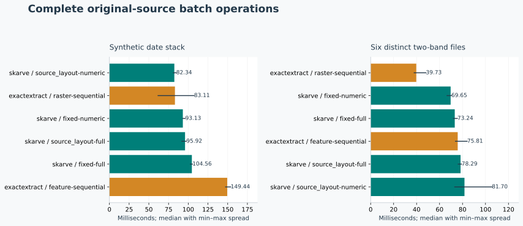
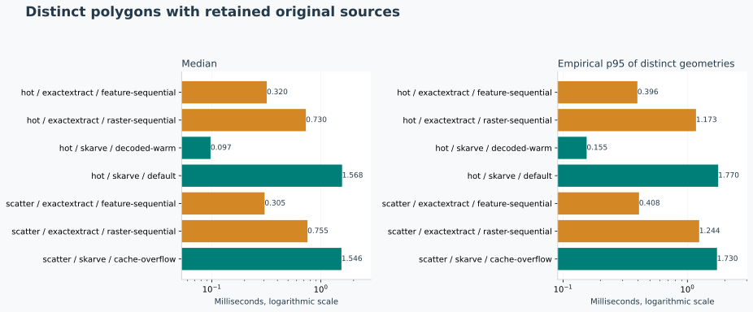
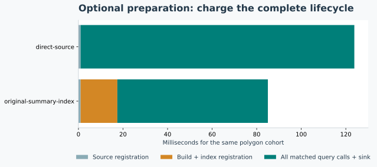
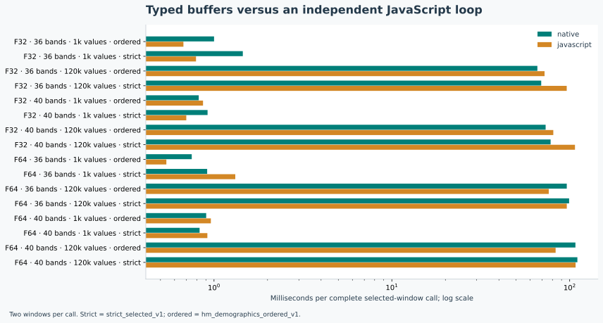

Skarve — public synthetic release confirmation
Native library 17e3546f7c526d5687b99641ce3f3adaa6d8d85cd7e4786fc84b2e0d2bf78c93. Seed 193542725648087. This report describes generated inputs on one host; it does not relabel historical private measurements.
Native checks: 168,456, native mismatches: 0. Runtime errors: 0. External scalar differences exceeding native tolerance: 11,786; they remain compatibility differences, not an interchangeable-backend guarantee.
Original fixture storage: 2,253,352 bytes; generation: 368.86 ms. Peak benchmark process RSS: 236,998,656 bytes. Optional index storage: 71,656 bytes; normalized full-raster duplicate: 0 bytes.
Hardware: AMD Ryzen 7 8745HS w/ Radeon 780M Graphics; Linux x86_64. Versions: {"exactextract": "0.3.0", "geos": "3.13.1", "native_gdal": "3.8.4", "numpy": "2.5.3", "python": "3.12.3", "rasterio": "1.5.1", "rasterio_gdal": "3.12.4", "shapely": "2.1.2", "skarve-engine": "0.1.0b1"}.
Batch: public source registration/open, native/shared all-zone execution, result normalization, close and canonical sink. exactextract uses natural all-source all-feature calls. Native adds integer valid count to the five shared fields. Source adapters, fixture creation and independent oracle are reported separately. Single calls retain source handles; warmup/source setup is separate. GDAL cache is 64 MiB; native decoded cache adds explicit 0/1 MiB within the common 2 GiB process cap.
What this run supports
dates: the lowest observed native median was 82.343 ms (source_layout-numeric); the strongest observed exactextract median was 83.112 ms (raster-sequential), a native/reference ratio of 0.991. Strategies are chosen per family after measurement, and all alternatives remain plotted. Three rounds do not establish a reliable winner where spread overlaps.
files: the lowest observed native median was 69.648 ms (fixed-numeric); the strongest observed exactextract median was 39.732 ms (raster-sequential), a native/reference ratio of 1.753. Strategies are chosen per family after measurement, and all alternatives remain plotted. Three rounds do not establish a reliable winner where spread overlaps.
Single default: 1.568 ms median versus the fastest reference median 0.320 ms on the same hot geometry sequence, native/reference ratio 4.91. Setup and warmup are listed separately; these are retained-source calls on local files.
Single decoded-warm: 0.097 ms median versus the fastest reference median 0.320 ms on the same hot geometry sequence, native/reference ratio 0.30. Setup and warmup are listed separately; these are retained-source calls on local files.
Single cache-overflow: 1.546 ms median versus the fastest reference median 0.305 ms on the same scatter geometry sequence, native/reference ratio 5.07. Setup and warmup are listed separately; these are retained-source calls on local files.
Typed buffers: native medians were lower in 8/16 shapes; native/JavaScript median ratios span 0.69–1.83. Large float64 ordered calls and several small calls lose; the public buffer interface is not a universal speedup. Native results and all exclusion counters match the independent control exactly. RSS is observed for Node, not constrained with a virtual-address limit.
Numerical compatibility
| System | Field | Maximum absolute error | Scalar differences |
|---|
| skarve | sum | 1.364242053e-11 | 0 |
| skarve | support | 5.00222086e-12 | 0 |
| skarve | mean | 1.280753281e-12 | 0 |
| skarve | min | 0 | 0 |
| skarve | max | 0 | 0 |
| exactextract | sum | 7.077261216e-06 | 5360 |
| exactextract | support | 2.24135556e-06 | 6190 |
| exactextract | mean | 1.336554245e-07 | 236 |
| exactextract | min | 0 | 0 |
| exactextract | max | 0 | 0 |
Complete source calls, explicit cache state, optional preparation, and all meaningful losses. Read the full report, chart data and raw timings.




Limits and compatibility
- One Linux host; no cold-storage or universal superiority claim.
- Three batch repeats show spread, not a stable p95. Single patterns use distinct geometry.
- GEOS cell intersections and fsum are an independent finite-precision oracle, not exact-real arithmetic. Thin rectangles use separable axis overlap.
- No external reference is automatically eligible for strict execution.
- No private application/source fixture or credential is required.
Failed or incompatible cases
0 runtime errors; 0 native scalar mismatches; 11,786 external scalar differences across 408 incompatible timing records. The complete per-record discrepancy list is retained in differences.json, and each individual field discrepancy is retained in the raw compressed result receipt.